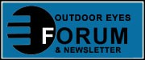
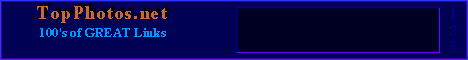
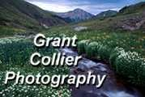
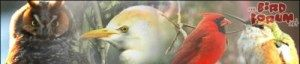

Wing Watchers.net's Links Page
To visit these important and informative links, just place your mouse arrow into the "Radio Button" (the light colored circle thingy before the link) and click on it.
PLEASE DON'T FORGET TO COME BACK NOW, HEAR?
TOP
More Great Links




|  |
 |

| Jim Gilbert's Cartoon Factory |
 |